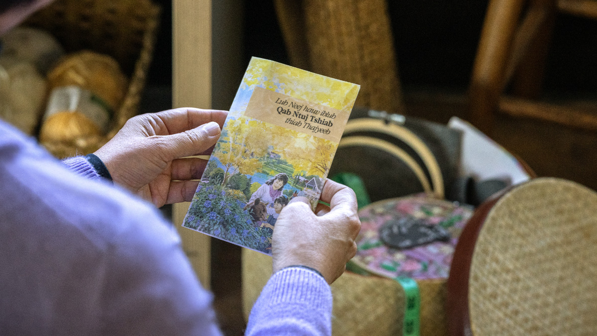

Artigo de estudo · Semana de 16 a 22 de novembro de 2026
Pregando as boas novas em “todas as línguas das nações”
Texto base: “Dez homens de todas as línguas das nações . . . agarrarão a túnica de um judeu.” (Zacarias 8:23)
Cânticos: 84, “Vamos fazer nosso melhor” (abertura) e 57, “Pregue a todo tipo de pessoas” (encerramento)
Objetivo do artigo: aprender como o povo de Jeová está cumprindo a profecia de Zacarias 8:23.
Ponto principal: em Babel, Jeová separou as línguas; hoje ele está juntando gente de todas elas. Os “dez homens” seguram firme na túnica do “judeu” porque viram que Deus está com o seu povo. Cada um de nós tem uma parte nisso: com as ferramentas na língua das pessoas e com uma Bíblia que usa o nome de Jeová.
Duas metades sustentam o artigo: a pregação em muitas línguas (§§1 a 11) e a Tradução do Novo Mundo, que divulga o nome de Jeová (§§12 a 17). Duas notas do artigo estão explicadas nos adicionais: a nota a, sobre a Septuaginta (§12), e a nota b, sobre a retirada do nome de Deus (§13).
Cada parágrafo traz o conteúdo resumido, com as frases citadas do artigo, os textos bíblicos escritos e um comentário pronto. O texto oficial completo está no jw.org e no JW Library: cada parágrafo tem um link direto.
Como responderia? As três perguntas do estudo
1 · A profecia Quem o “judeu” e os “dez homens” de Zacarias 8:23 representam? Os ungidos e a grande multidão, que serve a Jeová junto com eles. §§ 2 e 3 2 · As ferramentas O que torna possível que pessoas de todo o mundo aprendam sobre Jeová? Voluntários, donativos, os anjos e publicações em centenas de idiomas. §§ 4 a 12 3 · O nome Por que é importante conhecer e usar o nome de Jeová? A Bíblia manda louvar e invocar o nome, e Jeová protege quem o conhece. §§ 13 a 161. Por que é importante que as boas novas sejam pregadas em muitas línguas? (Romanos 10:13, 14)
Em Babel, Jeová confundiu a língua dos rebeldes, e a família humana ficou dividida. Mas o propósito de Jeová é unir “uma grande multidão . . . de todas as nações, tribos, povos e línguas”. A mensagem do Reino pregada numa língua que as pessoas entendem vai permitir que a grande multidão invoque o nome de Jeová durante a grande tribulação. É um privilégio participar nesse trabalho que salva vidas.
Meu comentário comentário base · até 30 s
Adicional: ilustração, outro ângulo e Guia de Pesquisa Etapa 1
- Mais fundo. A nota de estudo de Romanos 10:13 explica que invocar o nome de Jeová “envolve mais do que apenas conhecer e usar o nome pessoal de Deus”. Envolve “conhecer a Deus, confiar nele e buscar sua ajuda e orientação”.
📍 de onde veio
- JW Library
- Bíblia de estudo
- Romanos 10:13
- nota de estudo: “invocar o nome de Jeová” e “o nome de Jeová”
Para citar: Tradução do Novo Mundo, edição de estudo, nota de estudo de Romanos 10:13
- Por que Babel. O Estudo Perspicaz explica que a confusão das línguas “impossibilitou qualquer trabalho coordenado” naquele projeto e “resultou em serem espalhados para todas as partes do globo”. A nota de rodapé de Gênesis 11:9 diz que Babel significa “confusão”.
📍 de onde veio
- JW Library
- Guia de Pesquisa
- Gênesis 11:6
- “Idioma, língua” (it-1 “Idioma, língua” par. 9)
- wol.jw.org: parágrafo 9 do verbete
Para citar: Estudo Perspicaz das Escrituras, volume 1, verbete “Idioma, língua”, parágrafo 9
- JW Library
- Bíblia de estudo
- Gênesis 11:9
- nota de rodapé em “Babel”
Para citar: Tradução do Novo Mundo, nota de rodapé de Gênesis 11:9
- Mais fundo. O livro Seja Feliz para Sempre!, lição 21: “Cada um de nós faz o máximo que pode nessa obra porque sabemos que vidas estão em jogo.”
📍 de onde veio
- JW Library
- Guia de Pesquisa
- Romanos 10:14
- “Como as boas novas são pregadas?” (lff lição 21 pontos 1-6)
- wol.jw.org: ponto 3: “Quem tem a responsabilidade de pregar as boas novas?”
Para citar: Seja Feliz para Sempre!, lição 21, ponto 3
- Ilustração. A placa de perigo na beira do rio escrita só em inglês não salva quem só fala português. O aviso que salva tem que vir na língua de quem lê.Preparação pessoal: não citar como publicação
- Para os de idade. Muitos de nós aprendemos a verdade com alguém que teve paciência de explicar com palavras simples. Falar devagar e com palavras simples também é falar “a língua” de quem nos ouve.Preparação pessoal: não citar como publicação
2. O que Zacarias foi inspirado a profetizar?
Séculos antes de o apóstolo João escrever o livro de Apocalipse, Zacarias profetizou que ‘muitas nações se uniriam a Jeová e se tornariam seu povo’. Depois escreveu que dez homens de todas as línguas das nações agarrariam firmemente a túnica de um judeu, dizendo: “Queremos ir com vocês, pois ouvimos que Deus está com vocês.” Essa profecia está se cumprindo nos nossos dias.
Meu comentário comentário base · até 30 s
Adicional: ilustração, outro ângulo e Guia de Pesquisa Etapa 1
- Nota de rodapé. Em Zacarias 8:23, “túnica” também pode ser “barra da veste”, e “um judeu” é, ao pé da letra, “um homem judeu”. A cena é de quem segura a barra da roupa de outro para não ficar para trás.Preparação pessoal: não citar como publicação
📍 de onde veio
- JW Library
- Bíblia de estudo
- Zacarias 8:23
- nota de rodapé em “túnica” e em “um judeu”
Para citar: Tradução do Novo Mundo, nota de rodapé de Zacarias 8:23
- Mais fundo. A Sentinela de 15/3/2010 diz que os da grande multidão, embora não tenham a esperança celestial, “se orgulham de se associar com os que a têm”. E vê aí o cumprimento de Zacarias 2:11.
📍 de onde veio
- JW Library
- Guia de Pesquisa
- Zacarias 2:11
- “Um só rebanho, um só pastor” (w10 15/3 págs. 27-28)
- wol.jw.org: subtítulo “‘Eles se tornarão meu povo’”, parágrafo 19
Para citar: A Sentinela de 15 de março de 2010, página 28, parágrafo 19
- O contexto. Zacarias 8:21, 22 mostra a mesma cena: uns chamam os outros, “Vamos suplicar o favor de Jeová”, e “muitos povos e poderosas nações virão para buscar a Jeová dos exércitos”.
📍 de onde veio
- JW Library
- Bíblia de estudo (Tradução do Novo Mundo)
- Zacarias 8:21-22
Para citar: Zacarias 8:21-22
- Ilustração. Na rodoviária lotada, a criança segura firme a barra da saia da mãe para não se perder. Ela não larga, porque sabe que a mãe conhece o caminho. Os dez homens seguram firme porque viram que Deus está com o seu povo.Preparação pessoal: não citar como publicação
- Para os de idade. Pense na primeira vez que você entrou num Salão do Reino. O que fez você voltar? Muitos responderiam como os dez homens: deu para ver que Deus estava com aquele povo.Preparação pessoal: não citar como publicação
3. Quem o “judeu” e os “dez homens” representam hoje?
O “judeu” representa aqueles que Deus ungiu com espírito santo, também chamados de “Israel de Deus”. Esse grupo vai governar com Jesus no céu. Os “dez homens” representam pessoas humildes que têm a esperança de viver para sempre no Paraíso na Terra. Essas pessoas vêm de muitos países e falam diferentes idiomas.
Meu comentário comentário base · até 30 s
Adicional: ilustração, outro ângulo e Guia de Pesquisa Etapa 1
- Mais fundo. A Sentinela de janeiro de 2020: os “dez homens” sabem “que Jeová está abençoando o grupo dos ungidos e consideram uma honra poder adorar a Deus com eles”.
📍 de onde veio
- JW Library
- Guia de Pesquisa
- Zacarias 8:23
- “Nós iremos com vocês” (w20.01 págs. 26-27 pars. 1-2)
- wol.jw.org: parágrafo 1
Para citar: A Sentinela de janeiro de 2020, página 26, parágrafo 1
- Equilíbrio. A mesma matéria explica como ir com os ungidos: “Por servirem a Jeová junto com eles.” Mas avisa que os que têm esperança de viver na Terra “não encaram os ungidos como líderes, porque sabem que seu único Líder é Jesus”.
📍 de onde veio
- JW Library
- Guia de Pesquisa
- Zacarias 8:23
- “Nós iremos com vocês” (w20.01 págs. 26-27 pars. 1-2)
- wol.jw.org: parágrafo 2
Para citar: A Sentinela de janeiro de 2020, página 26, parágrafo 2
- Nota de estudo. Em Gálatas 6:16, “o Israel de Deus” “se refere ao Israel espiritual, e não aos descendentes literais de Jacó”. E a nota lembra que esta “é a única vez que esta expressão aparece nas Escrituras”.
📍 de onde veio
- JW Library
- Bíblia de estudo
- Gálatas 6:16
- nota de estudo: “o Israel de Deus” e “Israel”
Para citar: Tradução do Novo Mundo, edição de estudo, nota de estudo de Gálatas 6:16
- Ilustração. No mutirão de construção do Salão, poucos irmãos sabem ler a planta e muitos carregam tijolo. Um grupo não trabalha sem o outro. Ungidos e grande multidão servem juntos, cada um no seu lugar.Preparação pessoal: não citar como publicação
- Para os de idade. Quem tem muitos anos de verdade talvez tenha conhecido irmãos ungidos. Contar como era servir ao lado deles ajuda os mais novos a entender Zacarias 8:23.Preparação pessoal: não citar como publicação
4. O que aconteceu depois que Jesus designou “o escravo fiel e prudente” em 1919?
Em 1919, Jesus designou um grupo de homens ungidos como “o escravo fiel e prudente”. Esses irmãos perceberam que teriam que traduzir a mensagem da Bíblia para muitas línguas. Antes de 1919, os Estudantes da Bíblia já tinham apresentado o “Fotodrama da Criação” em vários idiomas. O livro A Harpa de Deus, de 1921, foi traduzido para 36 línguas. E em 1935, quando o escravo identificou quem era a “grande multidão”, ficou claro que ainda havia muito trabalho pela frente.
Meu comentário comentário base · até 30 s
Adicional: ilustração, outro ângulo e Guia de Pesquisa Etapa 2
- Mais fundo. A Sentinela de julho de 2022: “Em 1921, foi lançado o livro A Harpa de Deus, que ajudou muitos a aprender verdades básicas da Bíblia.” Depois vieram outros livros, até o Seja Feliz para Sempre!. E a matéria pergunta: “Qual desses livros ajudou você a conhecer e amar a Jeová?”
📍 de onde veio
- JW Library
- Guia de Pesquisa
- Mateus 24:45
- “Apoie Jesus, o nosso líder” (w22.07 págs. 10-12)
- wol.jw.org: parágrafo 10
Para citar: A Sentinela de julho de 2022, página 10, parágrafo 10
- Nota de estudo. Em Mateus 24:45, Jesus usou “escravo” no singular, “mas isso não quer dizer que ele estivesse se referindo a apenas uma pessoa”. A Bíblia “às vezes usa palavras no singular para se referir a grupos”.
📍 de onde veio
- JW Library
- Bíblia de estudo
- Mateus 24:45
- nota de estudo: “escravo”
Para citar: Tradução do Novo Mundo, edição de estudo, nota de estudo de Mateus 24:45
- Mais fundo. O livro Seja Feliz para Sempre!, lição 54: Jeová “usa um pequeno grupo de anciãos para dar alimento espiritual e cuidar da obra de pregação”. Esse grupo é o Corpo Governante.
📍 de onde veio
- JW Library
- Guia de Pesquisa
- Mateus 24:45
- “O que ‘o escravo fiel e prudente’ faz?” (lff lição 54)
- wol.jw.org: ponto 1: “Quem é ‘o escravo fiel e prudente’?”
Para citar: Seja Feliz para Sempre!, lição 54, ponto 1
- Mais fundo. A Sentinela de 1.º/11/2007: “Em 1919, o restante ungido iniciou uma corajosa campanha mundial de pregação”. E “na década de 1930, ficou claro” que as outras ovelhas “estavam sendo ajuntadas”.
📍 de onde veio
- JW Library
- Guia de Pesquisa
- Isaías 2:2
- “A palavra de Jeová nunca falha” (w07 1/11 págs. 24-25 pars. 12-13)
- wol.jw.org: parágrafo 13
Para citar: A Sentinela de 1.º de novembro de 2007, página 24, parágrafo 13
- Para os de idade. Com que livro você estudou? A Verdade Que Conduz à Vida Eterna, Poderá Viver Para Sempre no Paraíso na Terra, O Que a Bíblia Realmente Ensina? A Sentinela de julho de 2022 diz que cada um deles “atendeu à necessidade da época em que foi lançado”. Contar isso aos mais novos mostra a mão de Jeová na história.Preparação pessoal: não citar como publicação
📍 de onde veio
- JW Library
- Guia de Pesquisa
- Mateus 24:45
- “Apoie Jesus, o nosso líder” (w22.07 págs. 10-12)
- wol.jw.org: parágrafo 10
Para citar: A Sentinela de julho de 2022, página 10, parágrafo 10
5-6. Como Isaías 2:2-4 está se cumprindo hoje? (Veja também a imagem.)
Como Isaías profetizou, pessoas de toda a Terra mostraram interesse em aprender sobre Jeová. Para ajudá-las, o povo de Deus tem ‘se apresentado voluntariamente’ para pregar, traduzir, imprimir e distribuir publicações. Muitos irmãos trabalham no desenvolvimento e no suporte do aplicativo JW Library e do site jw.org. E o povo de Jeová apoia a pregação por fazer donativos: assim conseguimos produzir publicações em mais de 1.100 idiomas.
ler o §5 no jw.org · ler o §6 no jw.org
Meu comentário comentário base · até 30 s
Adicional: ilustração, outro ângulo e Guia de Pesquisa Etapa 2
- Na imagem. Jeová no seu trono e um anjo voando sobre a Terra; o Corpo Governante numa mesa de reuniões; uma equipe de tradução; um irmão numa gráfica conferindo livros Seja Feliz para Sempre recém-impressos; um irmão e uma irmã mostrando um vídeo em língua de sinais; um celular com o JW Library. Pergunta para a assistência: em qual dessas partes você já ajudou, nem que seja um pouco?Preparação pessoal: não citar como publicação
📍 de onde veio
- A Sentinela, edição de estudo de setembro de 2026
- “Pregando as boas novas em ‘todas as línguas das nações’”
- imagem e legenda dos §§ 5-6
Para citar: A Sentinela de setembro de 2026, “Pregando as boas novas em ‘todas as línguas das nações’”, imagem e legenda dos §§ 5-6
- Notas de rodapé. Em Isaías 2:2, “na parte final dos dias” também pode ser “nos últimos dias”. E, em Isaías 2:4, “arados” é, ao pé da letra, “relhas de arado”.
📍 de onde veio
- JW Library
- Bíblia de estudo
- Isaías 2:2, 4
- nota de rodapé em “Na parte final dos dias” e em “arados”
Para citar: Tradução do Novo Mundo, nota de rodapé de Isaías 2:2, 4
- Mais fundo. A Sentinela de março de 2016: “Agora estamos vendo acontecer o que Isaías e Miqueias profetizaram”, o povo de Deus subindo junto ao monte de Jeová. E, nessa viagem rumo ao novo mundo, “precisamos cooperar uns com os outros”.
📍 de onde veio
- JW Library
- Guia de Pesquisa
- Isaías 2:3
- “Faça a sua parte para continuarmos unidos!” (w16.03 pág. 17)
- wol.jw.org: parágrafo 17
Para citar: A Sentinela de março de 2016, página 17, parágrafo 17
- JW Library
- Guia de Pesquisa
- Isaías 2:3
- “Faça a sua parte para continuarmos unidos!” (w16.03 pág. 17)
- wol.jw.org: parágrafo 16
Para citar: A Sentinela de março de 2016, página 17, parágrafo 16
- Voluntários. O livro Seja Feliz para Sempre!, lição 55: “Ninguém é obrigado a fazer essas coisas. O amor que temos por Deus e por nossos irmãos é o que nos motiva a ‘nos apresentar voluntariamente’.” E sobre os donativos: “Para nós é um privilégio fazer donativos para apoiar a congregação e a obra mundial de pregação.”
📍 de onde veio
- JW Library
- Guia de Pesquisa
- Salmo 110:3
- “Apoie a sua congregação” (lff lição 55)
- wol.jw.org: ponto 1: “Como você pode usar seu tempo e sua energia para apoiar a congregação?”
Para citar: Seja Feliz para Sempre!, lição 55, ponto 1
- JW Library
- Guia de Pesquisa
- Salmo 110:3
- “Apoie a sua congregação” (lff lição 55)
- wol.jw.org: ponto 2: “Como podemos usar nossos bens materiais para apoiar a congregação?”
Para citar: Seja Feliz para Sempre!, lição 55, ponto 2
- As irmãs. Salmo 68:11: “As mulheres que proclamam as boas novas são um grande exército.” A Sentinela de 15/8/2014 dizia que, naquele tempo, as mulheres eram “a maioria dos mais de 1 milhão de proclamadores do Reino de tempo integral”.
📍 de onde veio
- JW Library
- Bíblia de estudo (Tradução do Novo Mundo)
- Salmo 68:11
Para citar: Salmo 68:11
- JW Library
- Guia de Pesquisa
- Salmo 68:11
- “Qual o papel das mulheres no propósito de Jeová?” (w14 15/8 pág. 10 par. 19)
- wol.jw.org: parágrafo 19
Para citar: A Sentinela de 15 de agosto de 2014, página 10, parágrafo 19
- Para os de idade. Quem já não consegue sair na pregação ainda apoia a obra com a oração, com a carta e com o donativo. A lição 55 lembra a viúva pobre de Lucas 21:1-4 e pergunta: “Será que precisamos dar muito dinheiro para agradar a Jeová?”Preparação pessoal: não citar como publicação
📍 de onde veio
- JW Library
- Guia de Pesquisa
- Salmo 110:3
- “Apoie a sua congregação” (lff lição 55)
- wol.jw.org: ponto 3: “Apoie a congregação com os seus donativos”, 1.º parágrafo (a viúva de Lucas 21)
Para citar: Seja Feliz para Sempre!, lição 55, ponto 3
- JW Library
- Guia de Pesquisa
- Salmo 110:3
- “Apoie a sua congregação” (lff lição 55)
- wol.jw.org: ponto 3: “Apoie a congregação com os seus donativos”, 1.ª pergunta
Para citar: Seja Feliz para Sempre!, lição 55, ponto 3
7. Como nos sentimos ao ver o cumprimento das profecias registradas em Zacarias e Apocalipse? (Apocalipse 14:6)
Hoje, o idioma não é uma barreira para o povo de Jeová. Trabalhamos em união e, com a ajuda dos anjos, declaramos “boas novas eternas” a toda nação, tribo, língua e povo. Ver essas profecias se cumprindo nos dá ainda mais certeza de que todas as outras profecias da Bíblia vão se cumprir. E ficamos determinados a continuar leais à organização que Deus está usando.
Meu comentário comentário base · até 30 s
Adicional: ilustração, outro ângulo e Guia de Pesquisa Etapa 2
- Mais fundo. O livro Seja Feliz para Sempre!, lição 24: “Os anjos não pregam diretamente para as pessoas. Em vez disso, eles podem ajudar os servos de Deus a encontrar pessoas que querem aprender sobre Jeová.”
📍 de onde veio
- JW Library
- Guia de Pesquisa
- Apocalipse 14:6
- “Quem são os anjos, e o que eles fazem?” (lff lição 24 ponto 4)
- wol.jw.org: ponto 4: “Os anjos ajudam as pessoas a aprender sobre Jeová”
Para citar: Seja Feliz para Sempre!, lição 24, ponto 4
- Experiências. A Sentinela de 15/12/2004 diz que é comum ouvir de irmãos que “encontraram pessoas que haviam orado a Deus pouco tempo antes pedindo ajuda para achar a verdade”. E conclui: “Esses episódios ocorrem com tanta freqüência que não podem ser considerados apenas meras coincidências.”
📍 de onde veio
- JW Library
- Guia de Pesquisa
- Apocalipse 14:6
- “Você aceita a ajuda de Jeová?” (w04 15/12 pág. 18 pars. 5-6)
- wol.jw.org: parágrafo 6
Para citar: A Sentinela de 15 de dezembro de 2004, página 18, parágrafo 6
- Mais fundo. A Sentinela de abril de 2026 chama a nossa pregação de “a maior obra de pregação que o mundo já viu”. E diz: “Apesar de Jeová usar humanos para pregar, os anjos estão envolvidos nesse trabalho.”
📍 de onde veio
- JW Library
- Guia de Pesquisa
- Apocalipse 14:6
- “O ‘Deus da verdade’ sempre cumpre o que promete” (w26.04 pág. 11 par. 10)
- wol.jw.org: parágrafo 10
Para citar: A Sentinela de abril de 2026, página 11, parágrafo 10
- Nota de rodapé. Em Apocalipse 14:6, “pelo meio do céu” também pode ser “em pleno ar; nas alturas”. É uma mensagem para todos verem.Preparação pessoal: não citar como publicação
📍 de onde veio
- JW Library
- Bíblia de estudo
- Apocalipse 14:6
- nota de rodapé em “pelo meio do céu”
Para citar: Tradução do Novo Mundo, nota de rodapé de Apocalipse 14:6
- Para os de idade. Quem tem muitos anos de verdade talvez tenha visto publicações chegarem em línguas que nem conhecia, ou grupos de língua estrangeira surgirem na cidade. Contar o que viu é dar testemunho de que as profecias se cumprem.Preparação pessoal: não citar como publicação
8. Que milagre Jeová fez no Pentecostes do ano 33?
No Pentecostes do ano 33, Jeová mostrou que o que ele tinha feito na Torre de Babel não seria um impedimento para a pregação. Ele fez com que os discípulos começassem a falar milagrosamente em idiomas que eles não sabiam, para que pessoas de várias partes do mundo conhecessem “as coisas magníficas de Deus”. Hoje podemos usar nossas publicações para ajudar quem não fala a nossa língua.
Meu comentário comentário base · até 30 s
Adicional: ilustração, outro ângulo e Guia de Pesquisa Etapa 3
- Mais fundo. O livro ‘Dê Testemunho Cabal’ sobre o Reino de Deus, capítulo 3: “Ouvir as boas novas em sua língua materna com certeza tocou o coração daqueles ouvintes.” E hoje “alguns aprendem um novo idioma para poder apoiar uma congregação de língua estrangeira”.
📍 de onde veio
- JW Library
- Guia de Pesquisa
- Atos 2:6
- “Cheios de espírito santo” (bt cap. 3 pars. 2-9)
- wol.jw.org: parágrafo 9
Para citar: ‘Dê Testemunho Cabal’ sobre o Reino de Deus, capítulo 3, página 24, parágrafo 9
- Nota de estudo. Em Atos 2:8, “a sua língua nativa” é, ao pé da letra, “a nossa própria língua em que nascemos”. A nota diz que muitos ali talvez entendessem grego ou hebraico, “mas ouvir as boas novas na sua língua materna chamou sua atenção”.
📍 de onde veio
- JW Library
- Bíblia de estudo
- Atos 2:8
- nota de estudo: “a sua língua nativa”
Para citar: Tradução do Novo Mundo, edição de estudo, nota de estudo de Atos 2:8
- Mais fundo. Um artigo do jw.org explica que o milagre servia para “habilitar os cristãos para dar um testemunho bem abrangente”. E que cerca de 3 mil pessoas que ouviram o testemunho no seu idioma “se tornaram discípulos naquele mesmo dia”.
📍 de onde veio
- JW Library
- Guia de Pesquisa
- Atos 2:11
- “O que a Bíblia ensina sobre falar em línguas?” (ijwbq artigo 150 par. 4)
- wol.jw.org: item “Habilitar os cristãos para dar um testemunho bem abrangente”
Para citar: jw.org, artigo “O que a Bíblia ensina sobre falar em línguas?”
- A lista de Atos 2. Os versículos 9 a 11 citam partos, medos, elamitas, gente da Mesopotâmia, do Egito, de Roma, cretenses e árabes. Peça para a assistência imaginar uma praça de Jerusalém cheia de todos esses sotaques.Preparação pessoal: não citar como publicação
📍 de onde veio
- JW Library
- Bíblia de estudo (Tradução do Novo Mundo)
- Atos 2:9-11
Para citar: Atos 2:9-11
- Para os de idade. Muitos irmãos de idade aprenderam a usar o celular só para ler a Bíblia e assistir às reuniões. Esse mesmo celular pode mostrar um vídeo na língua de um estrangeiro. É o nosso jeito de falar outras línguas.Preparação pessoal: não citar como publicação
9. Que ajudas temos para pregar às pessoas que não falam nosso idioma?
As pessoas precisam ouvir as boas novas num idioma que elas entendem. O artigo compara: um homem fica doente em outro país e, se não falar o idioma, ele vai precisar de um intérprete para entender o médico. Da mesma forma, bilhões de pessoas hoje estão sofrendo em sentido espiritual e emocional, e a esperança está na Bíblia. Para isso temos publicações impressas e digitais e vídeos em centenas de idiomas.
Meu comentário comentário base · até 30 s
Adicional: ilustração, outro ângulo e Guia de Pesquisa Etapa 3
- Nota de estudo. A nota de Mateus 24:14 explica que a palavra grega para “nação”, éthnos, “tem o sentido básico de um grupo de pessoas que têm algum tipo de parentesco, próximo ou distante, e que falam o mesmo idioma”. Pregar a todas as nações inclui pregar em todas as línguas.Preparação pessoal: não citar como publicação
📍 de onde veio
- JW Library
- Bíblia de estudo
- Mateus 24:14
- nota de estudo: “toda a terra habitada . . . todas as nações”
Para citar: Tradução do Novo Mundo, edição de estudo, nota de estudo de Mateus 24:14
- Como o quadro mudou. A Sentinela de 1.º/7/2004: “Em 1950, a língua materna de cerca de 3 em cada 5 Testemunhas de Jeová, em todo o mundo, era o inglês.” Em 2004, o inglês era “a língua materna de apenas 1 em cada 5”.
📍 de onde veio
- JW Library
- Guia de Pesquisa
- Zacarias 8:23
- “‘Ide e fazei discípulos’” (w04 1/7 págs. 11-12)
- wol.jw.org: subtítulo “Dentre todas as línguas”, parágrafo 13
Para citar: A Sentinela de 1.º de julho de 2004, página 11, parágrafo 13
- Ilustração. Na emergência do hospital, a família de um estrangeiro tenta explicar a dor dele, e ninguém entende. Quando chega alguém que fala a língua dele, o rosto do homem muda. A Bíblia na língua do coração faz o mesmo.Preparação pessoal: não citar como publicação
- Pergunta para a assistência. Quem aqui já usou o JW Library para mostrar um vídeo ou um texto em outra língua? O que se quer ouvir: experiências curtas, de poucos segundos.Preparação pessoal: não citar como publicação
- Para os de idade. Quem prega por carta pode colocar junto um folheto na língua do vizinho estrangeiro. Pode ser o folheto que vai ficar guardado por anos, como o de Youa, no quadro dos §§ 10 e 11.Preparação pessoal: não citar como publicação
📍 de onde veio
- A Sentinela, edição de estudo de setembro de 2026
- “Pregando as boas novas em ‘todas as línguas das nações’”
- quadro “Uma refugiada encontra esperança”
Para citar: A Sentinela de setembro de 2026, “Pregando as boas novas em ‘todas as línguas das nações’”, quadro “Uma refugiada encontra esperança”
10-11. O que você aprendeu com a experiência de Robert e com a história do quadro “Uma refugiada encontra esperança”?
Robert, que fala inglês, conheceu no testemunho em portos um homem da Turquia que estava trabalhando em um navio. O homem aceitou a brochura Boas Notícias de Deus para Você! em turco. Robert conhecia tão bem essa brochura que pedia para o homem ler parágrafos específicos, e mostrou respostas na Bíblia em turco pelo JW Library. O homem disse: “Parece até que você fala a minha língua!” No quadro, Youa, refugiada, deixou esse folheto escondido dentro de uma cesta por muitos anos. Tudo graças a um folheto na língua dela!
ler o §10 no jw.org · ler o §11 no jw.org · ler o quadro no jw.org

Meu comentário comentário base · até 30 s
Adicional: ilustração, outro ângulo e Guia de Pesquisa Etapa 3
- No quadro. A imagem mostra uma mulher segurando o folheto A Vida num Pacífico Novo Mundo no idioma hmong. Youa disse: “Eu nunca senti paz ou felicidade.” Depois de ler o folheto, ela “passou a ter esperança de uma vida melhor no futuro”.
📍 de onde veio
- A Sentinela, edição de estudo de setembro de 2026
- “Pregando as boas novas em ‘todas as línguas das nações’”
- imagem do quadro “Uma refugiada encontra esperança”
Para citar: A Sentinela de setembro de 2026, “Pregando as boas novas em ‘todas as línguas das nações’”, imagem do quadro “Uma refugiada encontra esperança”
- O alvo do § 11. “O que acha de ter o alvo de se preparar para falar sobre a Bíblia com pessoas que não falam sua língua?” Um jeito simples: conhecer bem uma brochura, como Robert, para saber mostrar o parágrafo certo.Preparação pessoal: não citar como publicação
📍 de onde veio
- A Sentinela, edição de estudo de setembro de 2026
- “Pregando as boas novas em ‘todas as línguas das nações’”
- § 11
Para citar: A Sentinela de setembro de 2026, “Pregando as boas novas em ‘todas as línguas das nações’”, parágrafo 11
- Mais fundo. O livro Seja Feliz para Sempre!, lição 21: “Nosso objetivo é pregar para as pessoas, não importa onde elas estejam.” E “como nem sempre as pessoas estão em casa, também pregamos em áreas públicas”. Robert pregava no porto.
📍 de onde veio
- JW Library
- Guia de Pesquisa
- Romanos 10:14
- “Como as boas novas são pregadas?” (lff lição 21 pontos 1-6)
- wol.jw.org: ponto 2: “Como nos esforçamos para pregar às pessoas?”
Para citar: Seja Feliz para Sempre!, lição 21, ponto 2
- A Sentinela, edição de estudo de setembro de 2026
- “Pregando as boas novas em ‘todas as línguas das nações’”
- § 10
Para citar: A Sentinela de setembro de 2026, “Pregando as boas novas em ‘todas as línguas das nações’”, parágrafo 10
- Ilustração. No porto, na rodoviária, na obra, no aplicativo de entrega: Robert foi aonde os estrangeiros estavam. Em muitas cidades do Brasil há imigrantes trabalhando bem perto de nós.Preparação pessoal: não citar como publicação
- Para os de idade. Youa guardou o folheto “por muitos anos”. Às vezes achamos que o folheto que deixamos foi para o lixo. A história dela mostra que ele pode estar guardado numa cesta, esperando a hora.Preparação pessoal: não citar como publicação
📍 de onde veio
- A Sentinela, edição de estudo de setembro de 2026
- “Pregando as boas novas em ‘todas as línguas das nações’”
- quadro “Uma refugiada encontra esperança”
Para citar: A Sentinela de setembro de 2026, “Pregando as boas novas em ‘todas as línguas das nações’”, quadro “Uma refugiada encontra esperança”
12. Como a Tradução do Novo Mundo tem ajudado o povo de Jeová?
Todos nós dependemos do trabalho dos tradutores. A tradução da Bíblia não é algo novo: por séculos, tradutores têm se esforçado muito. A Tradução do Novo Mundo já está disponível, inteira ou em parte, em mais de 300 idiomas. Um ancião no Nepal disse: “Ler essa tradução da Bíblia no meu idioma fez com que Jeová se tornasse mais real para mim.” Ela é exata, fácil de ler e ensina a verdade sobre Jeová, e isso ajuda o povo de Jeová a ser mais unido.
Meu comentário comentário base · até 30 s
Adicional: ilustração, outro ângulo e Guia de Pesquisa Etapa 4
- Nota a do artigo. “Uns 2.200 anos atrás, as Escrituras Hebraicas foram traduzidas para o grego. Essa foi a primeira vez que parte da Bíblia foi traduzida. Ela ficou conhecida como Septuaginta.”
📍 de onde veio
- A Sentinela, edição de estudo de setembro de 2026
- “Pregando as boas novas em ‘todas as línguas das nações’”
- nota a (no § 12)
Para citar: A Sentinela de setembro de 2026, “Pregando as boas novas em ‘todas as línguas das nações’”, nota a (no § 12)
- Mais fundo. A Sentinela de 1.º/10/1997, no artigo anterior ao que a nota b cita, lembra tradutores que arriscaram a vida: “William Tyndale foi martirizado (em 1536) pelo que tinha feito para tornar a Bíblia disponível em inglês.” E “com risco para a sua vida, Robert Morrison (de 1807 a 1818) traduziu a Bíblia para o chinês”.
📍 de onde veio
- Artigo, nota b do § 13
- A Sentinela de 1.º de outubro de 1997 (a mesma edição)
- artigo anterior ao que a nota b cita: “A Palavra de Deus permanece para sempre”
- wol.jw.org: parágrafo 9
Para citar: A Sentinela de 1.º de outubro de 1997, página 13, parágrafo 9
Não é o artigo que a nota b indica; é o artigo de estudo anterior, na mesma revista.
- Mais fundo. Na mesma revista, a Comissão da Tradução do Novo Mundo diz que os tradutores “sentem de modo especial a responsabilidade para com Ele, no sentido de transmitir Seus pensamentos e Suas declarações do modo mais exato possível”.
📍 de onde veio
- Artigo, nota b do § 13
- A Sentinela de 1.º de outubro de 1997
- “Defendamos lealmente a palavra inspirada de Deus”
- wol.jw.org: parágrafo 3 (logo antes do trecho que a nota b indica)
Para citar: A Sentinela de 1.º de outubro de 1997, página 16, parágrafo 3
- Nota de estudo. 1 Coríntios 1:10 pede que “não haja divisões”. A nota explica que “divisões” também pode ser “dissenções; cismas”, e que Paulo “dava muita importância para a união dentro da congregação cristã”.
📍 de onde veio
- JW Library
- Bíblia de estudo (Tradução do Novo Mundo)
- 1 Coríntios 1:10
Para citar: 1 Coríntios 1:10
- JW Library
- Bíblia de estudo
- 1 Coríntios 1:10
- nota de estudo: “divisões”
Para citar: Tradução do Novo Mundo, edição de estudo, nota de estudo de 1 Coríntios 1:10
- Para os de idade. Muitos irmãos de idade começaram a ler a Bíblia numa linguagem difícil. Hoje temos uma tradução que o artigo chama de “exata e fácil de ler”. Ler um versículo dela em voz alta para um neto mostra isso.Preparação pessoal: não citar como publicação
📍 de onde veio
- A Sentinela, edição de estudo de setembro de 2026
- “Pregando as boas novas em ‘todas as línguas das nações’”
- § 12
Para citar: A Sentinela de setembro de 2026, “Pregando as boas novas em ‘todas as línguas das nações’”, parágrafo 12
13. Por que poucas traduções da Bíblia usam o nome de Deus atualmente?
A Tradução do Novo Mundo é uma das poucas Bíblias que continuam usando o nome Jeová milhares de vezes. Uns cem anos atrás, era comum encontrar o nome Jeová em muitas traduções. Mas hoje muitos líderes religiosos não querem que as pessoas conheçam esse nome. Os líderes da Igreja Católica removeram o nome Jeová de suas Bíblias, e a maioria das religiões protestantes não usa o nome de Deus.
Meu comentário comentário base · até 30 s
Adicional: ilustração, outro ângulo e Guia de Pesquisa Etapa 4
- Nota b do artigo. Em 2008, o Papa Bento XVI orientou que o nome de Deus “não deve ser usado nem pronunciado” em cerimônias, orações e hinos católicos.
📍 de onde veio
- A Sentinela, edição de estudo de setembro de 2026
- “Pregando as boas novas em ‘todas as línguas das nações’”
- nota b (no § 13)
Para citar: A Sentinela de setembro de 2026, “Pregando as boas novas em ‘todas as línguas das nações’”, nota b (no § 13)
- A matéria da nota b. A Sentinela de 1.º/10/1997 conta que uma versão albanesa traduziu “o teu nome”, em Mateus 6:9 e João 17:6, 26, simplesmente por “tu”, “como se esses textos não mencionassem um nome”. E que, no Salmo 83:18, A Bíblia na Linguagem de Hoje elimina “o nome pessoal de Deus e qualquer referência ao fato de que Deus tem um nome”.
📍 de onde veio
- Artigo, nota b do § 13
- A Sentinela de 1.º de outubro de 1997
- “Defendamos lealmente a palavra inspirada de Deus”
- wol.jw.org: parágrafo 6
Para citar: A Sentinela de 1.º de outubro de 1997, página 17, parágrafo 6
- Mais fundo. O Apêndice A1 da Tradução do Novo Mundo: “Muitos tradutores da Bíblia tomaram sem justificativa a liberdade de omitir o nome de Deus, Jeová, das traduções modernas, embora esse nome seja encontrado em antigos manuscritos da Bíblia.”
📍 de onde veio
- JW Library
- Guia de Pesquisa
- João 17:26
- “A1 Princípios de tradução da Bíblia” (nwt pág. 1785)
- wol.jw.org: parágrafo sobre o nome de Deus
Para citar: Tradução do Novo Mundo, Apêndice A1, “Princípios de tradução da Bíblia”
- Um exemplo em português. Um artigo do jw.org compara Romanos 10:13. A Tradução do Novo Mundo diz: “Todo aquele que invocar o nome de Jeová será salvo.” A Almeida revista e corrigida diz: “Porque todo aquele que invocar o nome do Senhor será salvo.” E explica que o versículo cita Joel 2:32, que no hebraico original “usa o nome de Deus”.
📍 de onde veio
- JW Library
- Guia de Pesquisa
- Romanos 10:13
- “Romanos 10:13: ‘Invocar o nome do Senhor’” (ijwbv artigo 3)
- wol.jw.org: citação da Tradução do Novo Mundo no topo
Para citar: jw.org, artigo “Romanos 10:13: Invocar o nome do Senhor”, citação da Tradução do Novo Mundo no topo
- JW Library
- Guia de Pesquisa
- Romanos 10:13
- “Romanos 10:13: ‘Invocar o nome do Senhor’” (ijwbv artigo 3)
- wol.jw.org: citação da Almeida revista e corrigida no topo
Para citar: jw.org, artigo “Romanos 10:13: Invocar o nome do Senhor”, citação da Almeida revista e corrigida no topo
- JW Library
- Guia de Pesquisa
- Romanos 10:13
- “Romanos 10:13: ‘Invocar o nome do Senhor’” (ijwbv artigo 3)
- wol.jw.org: 4.º parágrafo
Para citar: jw.org, artigo “Romanos 10:13: Invocar o nome do Senhor”, 4.º parágrafo
- Para os de idade. Muitos irmãos de idade cresceram ouvindo só “o Senhor” na igreja. O dia em que leram o nome Jeová pela primeira vez na Bíblia é uma ótima experiência para contar.Preparação pessoal: não citar como publicação
14. Como a Bíblia mostra que é importante saber e usar o nome de Deus?
Os Salmos dizem que precisamos ‘louvar o nome de Jeová’. Jesus ensinou a orar: “Santificado seja o teu nome.” E disse ao Pai: “Eu tornei o teu nome conhecido.” Paulo, citando Joel, escreveu: “Todo aquele que invocar o nome de Jeová será salvo.” Quem usa traduções da Bíblia que omitem o nome divino não consegue obedecer essas orientações.
Meu comentário comentário base · até 30 s
Adicional: ilustração, outro ângulo e Guia de Pesquisa Etapa 4
- Nota de rodapé. O Salmo 135:1 começa com “Louvem a Jah!”, que também pode ser “Aleluia!”. E a nota explica que “Jah” é uma forma reduzida do nome Jeová. Quem diz aleluia está louvando o nome de Jeová, mesmo sem saber.Preparação pessoal: não citar como publicação
📍 de onde veio
- JW Library
- Bíblia de estudo
- Salmo 135:1
- nota de rodapé em “Louvem a Jah!”
Para citar: Tradução do Novo Mundo, nota de rodapé de Salmo 135:1
- Mais fundo. A Sentinela de junho de 2020 explica a palavra: “Santificar significa tornar algo santo, limpo, puro.” E diz que um nome “envolve uma reputação; envolve o que os outros pensam sobre a pessoa que tem aquele nome”.
📍 de onde veio
- JW Library
- Guia de Pesquisa
- Mateus 6:9
- “‘Santificado seja o teu nome’” (w20.06 pág. 3)
- wol.jw.org: parágrafo 5
Para citar: A Sentinela de junho de 2020, página 3, parágrafo 5
- JW Library
- Guia de Pesquisa
- Mateus 6:9
- “‘Santificado seja o teu nome’” (w20.06 pág. 3)
- wol.jw.org: parágrafo 6
Para citar: A Sentinela de junho de 2020, página 3, parágrafo 6
- Mais fundo. A Sentinela de maio de 2025: os discípulos já sabiam o nome de Jeová. “Na verdade, ele ensinou o que esse nome representa.” E ilustra: um ancião que é cirurgião salva a sua vida no hospital. Ele continua o mesmo irmão, mas agora o nome dele lembra o que ele fez por você.
📍 de onde veio
- JW Library
- Guia de Pesquisa
- João 17:26
- “O que o nome de Jeová significa para Jesus?” (w25.05 págs. 20-21)
- wol.jw.org: parágrafo 3
Para citar: A Sentinela de maio de 2025, página 20, parágrafo 3
- JW Library
- Guia de Pesquisa
- João 17:26
- “O que o nome de Jeová significa para Jesus?” (w25.05 págs. 20-21)
- wol.jw.org: parágrafo 4 (a ilustração do ancião cirurgião)
Para citar: A Sentinela de maio de 2025, página 21, parágrafo 4
- Nota de estudo. Em João 17:26, “e o tornarei conhecido” também poderia ser traduzido “e continuarei a torná-lo conhecido”. Assim, Jesus “indicou que o nome de Deus teria cada vez mais significado para seus seguidores”.
📍 de onde veio
- JW Library
- Bíblia de estudo
- João 17:26
- nota de estudo: “Eu tornei o teu nome conhecido”
Para citar: Tradução do Novo Mundo, edição de estudo, nota de estudo de João 17:26
- Para os de idade. Quando a memória falha e a oração fica curta, ainda dá para começar como Jesus ensinou: “Pai, santificado seja o teu nome.” Foi o primeiro pedido que ele colocou na oração.Preparação pessoal: não citar como publicação
📍 de onde veio
- JW Library
- Bíblia de estudo (Tradução do Novo Mundo)
- Lucas 11:2
Para citar: Lucas 11:2
15. O que o povo de Deus sente pelo nome de Jeová?
A grande maioria das Testemunhas de Jeová tem acesso a uma tradução da Bíblia que transmite a verdade de modo exato numa língua que elas entendem. A Tradução do Novo Mundo nos ajuda a entender a importância de amar e louvar o glorioso nome de Deus. Ela também nos ajuda a confiar em Jeová.
Meu comentário comentário base · até 30 s
Adicional: ilustração, outro ângulo e Guia de Pesquisa Etapa 4
- Mais fundo. O livro Achegue-se a Jeová, capítulo 7, explica Provérbios 18:10: “o nome divino em si não é um talismã”. “Temos de conhecer o Portador desse nome, confiar Nele e viver de acordo com os seus padrões justos.”
📍 de onde veio
- JW Library
- Guia de Pesquisa
- Provérbios 18:10
- “Poder protetor: ‘Deus é nosso refúgio’” (cl cap. 7 par. 8)
- wol.jw.org: parágrafo 8
Para citar: Achegue-se a Jeová, capítulo 7, página 70, parágrafo 8
- Nota de rodapé. Em Provérbios 18:10, “recebe proteção” é, ao pé da letra, “é colocado no alto”, isto é, “fora de alcance, a salvo”.
📍 de onde veio
- JW Library
- Bíblia de estudo
- Provérbios 18:10
- nota de rodapé em “recebe proteção”
Para citar: Tradução do Novo Mundo, nota de rodapé de Provérbios 18:10
- Mais fundo. A Sentinela de 15/8/2004: “Deus oferece proteção especialmente aos justos que o buscam de modo ativo, como que correndo para se abrigar dentro de uma torre forte.”
📍 de onde veio
- JW Library
- Guia de Pesquisa
- Provérbios 18:10
- “Jeová é o nosso ‘baluarte em tempos de aflição’” (w04 15/8 pág. 17 par. 4)
- wol.jw.org: parágrafo 4
Para citar: A Sentinela de 15 de agosto de 2004, página 17, parágrafo 4
- Ilustração. Quando a chuva forte pega a gente na rua, ninguém fica parado repetindo o nome da marquise. A gente corre para debaixo dela. Confiar no nome de Jeová é correr para ele.Preparação pessoal: não citar como publicação
- Para os de idade. Muitos irmãos de idade já correram para essa torre muitas vezes: num diagnóstico, num enterro, numa noite sem dormir. Contar uma dessas vezes, em poucas palavras, fortalece quem é novo.Preparação pessoal: não citar como publicação
16. Por que é importante conhecer a Jeová agora? (João 17:3)
Em breve vai haver uma guerra entre os “reis de toda a terra habitada” e Jeová. Jeová vai proteger os que o conhecem e respeitam o seu nome. Mas aqueles que se recusam a aceitar a Jeová como seu Deus e Pai serão forçados a conhecê-lo de um modo diferente: “Terão de saber que eu sou Jeová.” Os servos de Deus vão ficar felizes de ter Jeová como Amigo, não como adversário.
Meu comentário comentário base · até 30 s
Adicional: ilustração, outro ângulo e Guia de Pesquisa Etapa 5
- A nota de estudo que o artigo manda ver. Em João 17:3, “que conheçam a ti” pode ser “que continuem a te conhecer”. O verbo grego ginósko “pode transmitir também a ideia de um esforço contínuo para conhecer melhor alguém, não importa o quanto ele já seja conhecido”. Inclui “saber o que a pessoa gosta e o que ela não gosta”.
📍 de onde veio
- JW Library
- Bíblia de estudo
- João 17:3
- nota de estudo: “que conheçam a ti” (a nota que o § 16 manda ver)
Para citar: Tradução do Novo Mundo, edição de estudo, nota de estudo de João 17:3
- Mais fundo. A Sentinela de julho de 2026, sobre o Salmo 9:10: “Quanto mais conhecemos a Jeová, mais confiamos nele.” E lembra o que Paulo escreveu pouco antes de morrer: “Conheço Aquele em quem creio.”
📍 de onde veio
- JW Library
- Guia de Pesquisa
- Salmo 9:10
- “Você está conhecendo a Jeová cada vez melhor?” (w26.07 pág. 15 par. 6)
- wol.jw.org: parágrafo 6
Para citar: A Sentinela de julho de 2026, página 15, parágrafo 6
- Mais fundo. A Sentinela de maio de 2022, sobre Apocalipse 16:14: “Mas nós não precisamos ficar com medo. Jeová, o nosso Deus todo-poderoso, vai agir rapidamente para salvar todos aqueles que apoiam seu Reino.”
📍 de onde veio
- JW Library
- Guia de Pesquisa
- Apocalipse 16:14
- “Apocalipse: O que significa para os inimigos de Deus?” (w22.05 pág. 10 par. 11)
- wol.jw.org: parágrafo 11
Para citar: A Sentinela de maio de 2022, página 10, parágrafo 11
- Malaquias 3:16. Jeová escreve um “livro de recordação” para os que “meditavam no seu nome”. A nota de rodapé diz que “meditavam no” pode ser “pensavam no” ou, possivelmente, “entesouravam o”. E a Sentinela de setembro de 2022 diz que esse livro “já tem milhões de nomes”.
📍 de onde veio
- JW Library
- Bíblia de estudo (Tradução do Novo Mundo)
- Malaquias 3:16
Para citar: Malaquias 3:16
- JW Library
- Bíblia de estudo
- Malaquias 3:16
- nota de rodapé em “meditavam no”
Para citar: Tradução do Novo Mundo, nota de rodapé de Malaquias 3:16
- JW Library
- Guia de Pesquisa
- Malaquias 3:16
- “Será que o seu nome está no ‘livro da vida’?” (w22.09 pág. 14 par. 1)
- wol.jw.org: parágrafo 1
Para citar: A Sentinela de setembro de 2022, página 14, parágrafo 1
- Para os de idade. Um amigo de 50 anos a gente reconhece pelo jeito de andar e pela voz no telefone. E ainda assim continua aprendendo sobre ele. Com Jeová é igual: quem tem muitos anos de verdade ainda descobre coisas novas sobre ele.Preparação pessoal: não citar como publicação
17. Que privilégio nós temos?
É um privilégio ter uma participação, ainda que pequena, no cumprimento de Zacarias 8:23. Trabalhamos não só com nossos irmãos, mas também com os anjos. Jeová nos dá as ferramentas para alcançar pessoas de toda nação, tribo e língua. Vamos ajudar o maior número de pessoas a se achegar ao nosso Pai Jeová, que é imparcial, misericordioso e paciente, até que o nome de Jeová seja santificado diante de todas as pessoas.
Meu comentário comentário base · até 30 s
Adicional: ilustração, outro ângulo e Guia de Pesquisa Etapa 5
- Mais fundo. O livro Seja Feliz para Sempre!, lição 21, conta o caso de Paul, na Nova Zelândia. Uma mulher tinha orado de manhã, usando o nome de Jeová, pedindo que alguém fosse à casa dela. Paul conta: “Três horas depois, bati na porta dela.”
📍 de onde veio
- JW Library
- Guia de Pesquisa
- Romanos 10:14
- “Como as boas novas são pregadas?” (lff lição 21 pontos 1-6)
- wol.jw.org: ponto 5: “Somos colaboradores de Deus”
Para citar: Seja Feliz para Sempre!, lição 21, ponto 5
- Como Jeová vê. Romanos 10:15: “Como são lindos os pés daqueles que declaram boas novas de coisas boas!” A lição 21 do livro Seja Feliz para Sempre! pede para ler esse versículo e pensar no que Jeová sente por quem prega.
📍 de onde veio
- JW Library
- Bíblia de estudo (Tradução do Novo Mundo)
- Romanos 10:15
Para citar: Romanos 10:15
- JW Library
- Guia de Pesquisa
- Romanos 10:14
- “Como as boas novas são pregadas?” (lff lição 21 pontos 1-6)
- wol.jw.org: ponto 4: “Nós nos esforçamos bastante para pregar para todas as pessoas”
Para citar: Seja Feliz para Sempre!, lição 21, ponto 4
- Ilustração. Na colheita do café, quem colhe só um balaio também ajudou a encher o caminhão. Ninguém diz que a parte dele não contou.Preparação pessoal: não citar como publicação
- Para os de idade. “Ainda que pequena”: o artigo valoriza a parte de cada um. Uma carta por semana, um folheto deixado na sala de espera do médico, uma oração pela pregação. Tudo isso faz parte da obra.Preparação pessoal: não citar como publicação
📍 de onde veio
- A Sentinela, edição de estudo de setembro de 2026
- “Pregando as boas novas em ‘todas as línguas das nações’”
- § 17
Para citar: A Sentinela de setembro de 2026, “Pregando as boas novas em ‘todas as línguas das nações’”, parágrafo 17
Como responderia?
Quem o “judeu” e os “dez homens” da profecia de Zacarias 8:23 representam?
Meu comentário comentário base · até 30 s
O que torna possível que pessoas de todo o mundo aprendam sobre Jeová?
Meu comentário comentário base · até 30 s
Por que é importante conhecer e usar o nome de Jeová?
Meu comentário comentário base · até 30 s
Roteiro de 60 minutos
Estudo de A Sentinela, 17 parágrafos e 15 perguntas, mais 3 de revisão. Os tempos são referência.
Cântico 84 e oração
“Vamos fazer nosso melhor”.
Texto base e objetivo
Leia Zacarias 8:23. Destaque a cena: alguém segura firme a túnica de outro para não ficar para trás.
§§1 e 2, por que pregar em muitas línguas
Leia Romanos 10:13, 14. Babel separou; Jeová junta (§1). A profecia de Zacarias (§2).
§§3 e 4, o judeu, os dez homens e o escravo fiel
Ungidos e grande multidão servem juntos (§3). De 1919 a 1935: traduzir era preciso (§4).
§§5 a 7, um povo que se oferece
Leia Isaías 2:2-4 e comente a primeira imagem (§§5 e 6). Leia Apocalipse 14:6: os anjos ajudam (§7).
§§8 a 11, um milagre moderno
Pentecostes (§8). O intérprete no médico (§9). Robert no porto e Youa com o folheto escondido na cesta (§§10 e 11): peça um comentário sobre o quadro e a segunda imagem.
§§12 a 15, o nome de Jeová na Bíblia
Tradução do Novo Mundo em mais de 300 idiomas e a nota a (§12). Por que tantas Bíblias tiraram o nome, e a nota b (§13). O que a Bíblia diz sobre o nome (§14). A torre forte (§15).
§§16 e 17, conhecer a Jeová agora
Leia João 17:3 e a nota de estudo “que conheçam a ti” (§16). O privilégio de ter uma parte, ainda que pequena (§17).
Como responderia?
Uma resposta curta para cada pergunta de revisão.
Encerramento e cântico 57
“Pregue a todo tipo de pessoas”.
Se o tempo apertar
Pode encurtar: §4, §8 e §15.
Não pode faltar: Romanos 10:13, 14 (§1), quem são o judeu e os dez homens (§3), Robert e Youa (§§10 e 11), por que tantas Bíblias tiraram o nome de Jeová (§13) e João 17:3 com a nota de estudo (§16).
Resumo: os pontos altos deste estudo
O caminho que percorremos
- Uma profecia para os nossos dias. Babel separou; Jeová junta numa grande multidão. §1 a §3
- Um povo que se oferece. Tradução, gráficas, JW Library, donativos e anjos. §4 a §7
- Um milagre moderno. A mensagem no idioma do coração, como Robert e Youa. §8 a §11
- Uma Bíblia com o nome de Jeová. A Tradução do Novo Mundo usa o nome milhares de vezes. §12 a §15
- Conhecer a Jeová agora. Ele protege quem o conhece; o privilégio é nosso. §16 e §17
Os sete pontos altos
- Em Babel, Jeová confundiu as línguas; hoje ele reúne pessoas de todas elas para invocar o seu nome.
- O “judeu” são os ungidos; os “dez homens” são a grande multidão, que serve a Jeová junto com eles.
- Desde 1919, o escravo fiel entendeu que era preciso traduzir; hoje há publicações em mais de 1.100 idiomas.
- Voluntários e donativos tornam isso possível, e os anjos ajudam a achar quem quer aprender.
- Não preciso falar a língua da pessoa: preciso conhecer bem as ferramentas, como Robert. Um folheto pode mudar uma vida, como a de Youa.
- A Tradução do Novo Mundo, em mais de 300 idiomas, usa o nome Jeová milhares de vezes, enquanto muitas Bíblias o tiraram.
- Conhecer a Jeová agora é questão de vida: ele vai proteger os que o conhecem e respeitam o seu nome.
Três frases para o encerramento
- “Em Babel as línguas separaram as pessoas; na congregação, elas se juntam.”
- “Eu não preciso falar a língua do vizinho. Preciso conhecer bem a ferramenta.”
- “Quero conhecer a Jeová agora, como Amigo, e não depois, como adversário.”
Suas respostas
Cada campo já vem com um comentário pronto. O que você ajustar fica salvo automaticamente neste navegador, neste aparelho. Para levar para outro aparelho, baixe o arquivo aqui e carregue no outro lado.
O arquivo é um .json com os seus comentários e as anotações marcadas como vistas.
Preparação baseada no artigo de estudo “Pregando as boas novas em ‘todas as línguas das nações’”, A Sentinela, edição de estudo de setembro de 2026, para a semana de 16 a 22 de novembro de 2026. Complementos tirados do Guia de Pesquisa, da matéria indicada na nota b, das notas de estudo e das notas de rodapé da Tradução do Novo Mundo; cada um mostra o caminho da fonte no botão “de onde veio”. Bíblia: Tradução do Novo Mundo (edição de estudo), extraída do JW Library.
Os resumos, os comentários base, as ilustrações, as anotações e o roteiro são notas de preparação pessoal, não material publicado pelas Testemunhas de Jeová. O artigo, as imagens e o texto da Bíblia são propriedade da Watch Tower Bible and Tract Society.